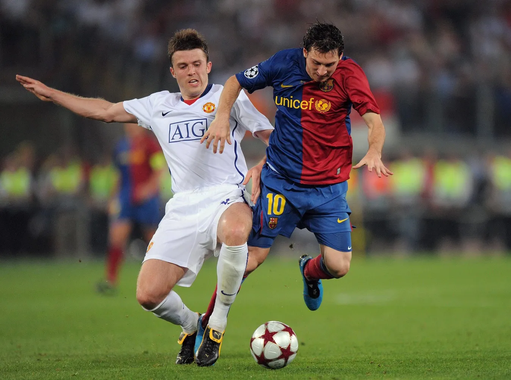
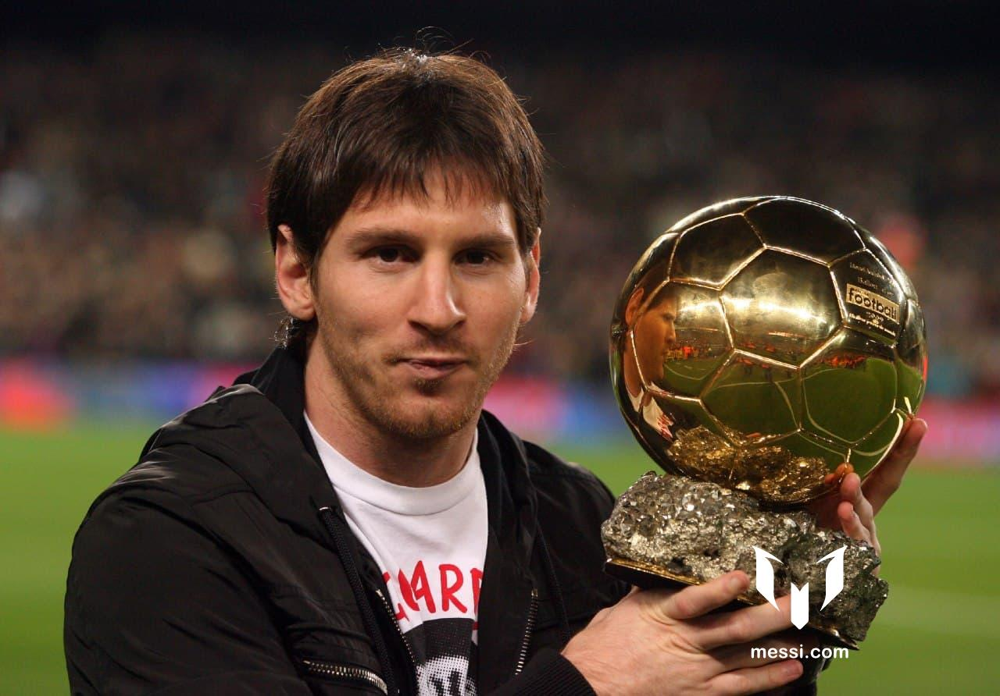
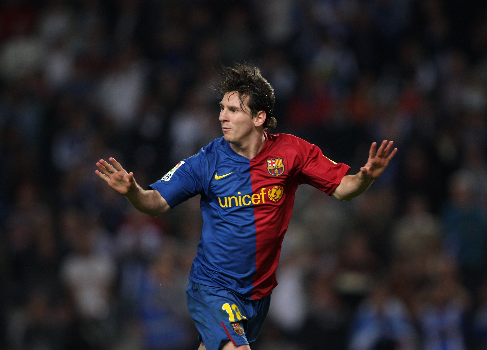
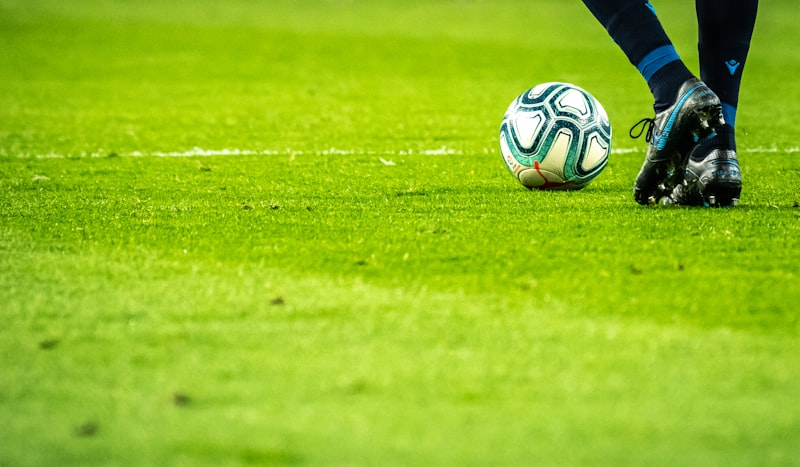
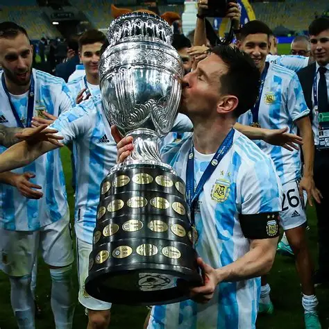
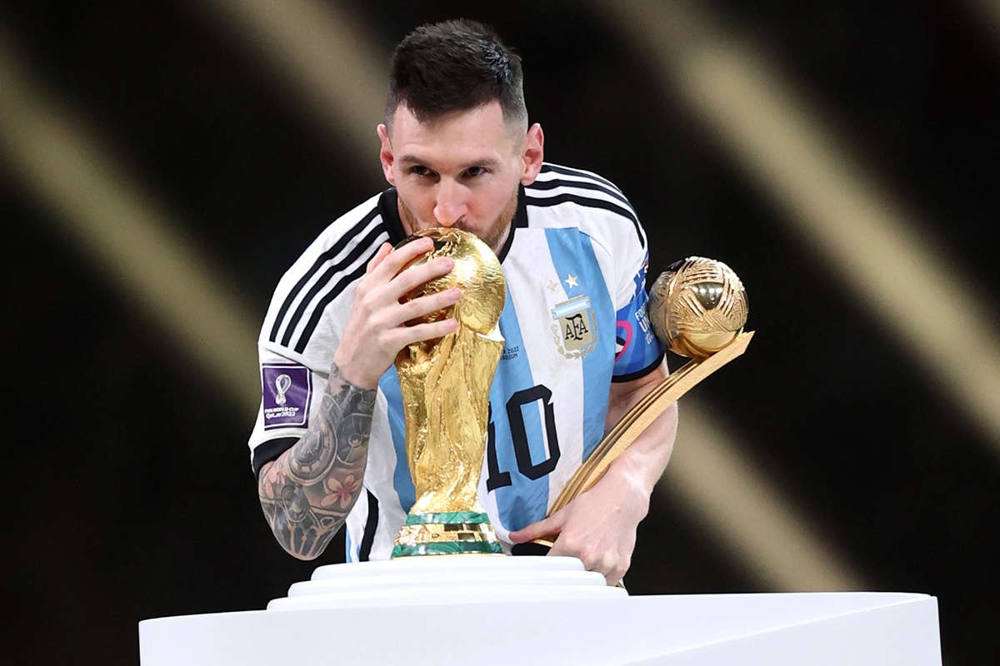

LIONEL
MESSI
The definitive journey of a boy from Rosario who redefined the beautiful game forever.
The Genesis.

Rosario, 1987
Born into a working-class family in Rosario, Santa Fe, Lionel Andrés Messi's connection with football was immediate. On the dusty streets of his neighborhood, the small boy with a giant talent began his ascent.
Faced with growth hormone deficiency at age 11, his future was uncertain until FC Barcelona saw the spark. At 13, he crossed the Atlantic, a move that would change football history.
The Journey.

The Debut
At 17, a legend was born. Messi steps onto the pitch for FC Barcelona for the first time.

European Masterclass
A historic treble. Messi wins his first of eight Ballon d'Or awards at age 22.

91 Goals
Breaking the impossible. A record-breaking year that solidified his status as the clinical king.

The Treble Season
Lionel Messi helped FC Barcelona win La Liga, Copa del Rey, and the UEFA Champions League, completing a historic treble season.

International Redemption
The win ended a 28-year trophy drought for Argentina and was an emotional milestone for Messi after many heartbreaking finals.

World Champion
The final jewel in the crown. Leading Argentina to victory in Qatar.
The GOAT Stats.
Iconic Moments.
The Legacy.
"I always want more. Whether it's a goal, or winning a game, I'm never satisfied."
— Lionel Messi
With 8 Ballon d'Or awards, a World Cup, and a style of play that defies logic, Messi leaves behind a legacy of humility and unprecedented greatness. He didn't just play the game; he perfected it.